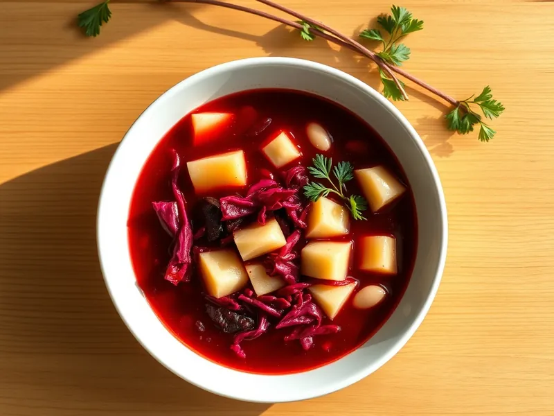

Борщ постный с фасолью
Яркий борщ без мяса со свёклой, капустой и консервированной фасолью
70 мин6 порц.197 ккал на порциюБ 8 · Ж 5 · У 29Украинская кухня
Открыть в приложении: порции, таймеры, список покупок
Продукты на 6 порц.
- Свёкла1,5 шт
- Капуста белокочанная300 г
- Картофель2 шт
- Фасоль консервированная1 шт
- Морковь1 шт
- Лук репчатый1 шт
- Томатная паста2 ст. л.
- Растительное масло3 ст. л.
- Чеснок2 зуб.
- Уксус 9%2 ч. л.
- Соль1,5 ч. л.
- Вода2000 мл
Как готовить
- Вскипятите воду на сильном огне, положите картофель кубиками и варите на среднем огне 10 минут.
- Добавьте тонко нашинкованную капусту и варите 10 минут.
- Натрите свёклу на крупной тёрке, сбрызните уксусом. Обжарьте на масле на среднем огне 5 минут, добавьте тёртую морковь, нарезанный лук и томатную пасту, тушите 10 минут под крышкой.
- Переложите свекольную зажарку в кастрюлю, добавьте фасоль вместе с жидкостью из банки, посолите.
- Варите на слабом огне 10 минут, не допуская бурного кипения, чтобы борщ остался ярким.
- Добавьте раздавленный чеснок, выключите огонь и дайте настояться под крышкой 15 минут.
Совет. Уксус на свёкле сохраняет красный цвет: без кислоты борщ при варке станет бурым.